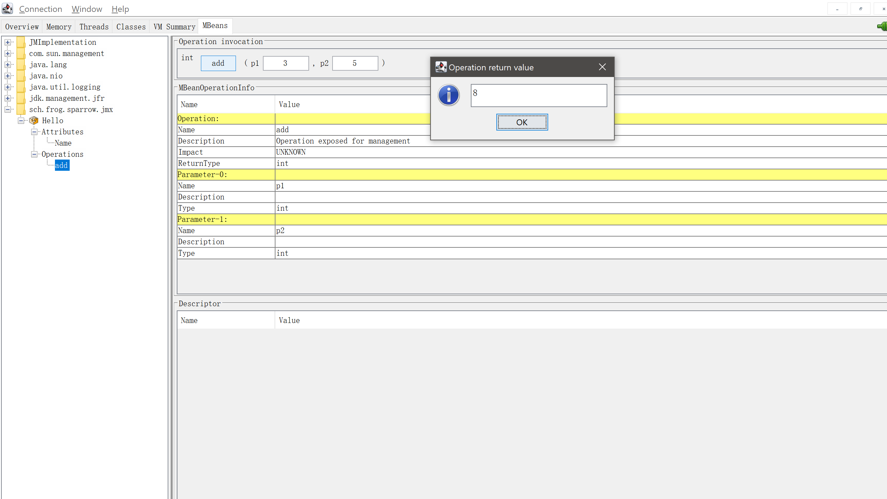
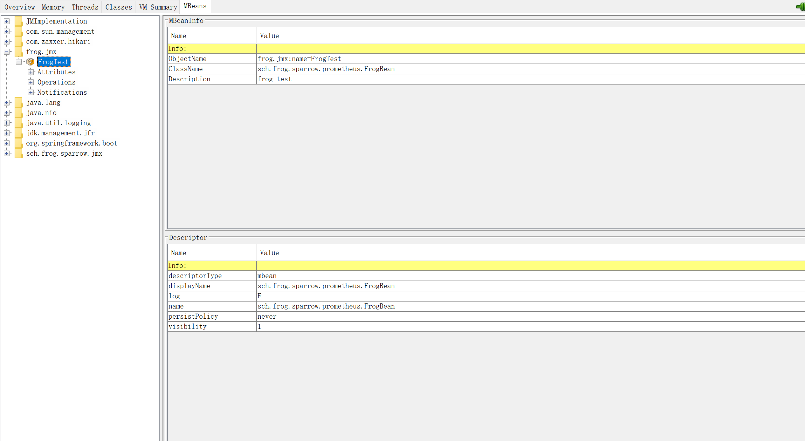

JMX（Java Management Extensions，即Java管理扩展）是一个为应用程序、设备、系统等植入管理功能的框架.
本地使用jmx很简单:
这些指标包括:
本地连接不需要什么配置, 但是远程连接, 需要对外开放相关端口.
jmxremote.accessfrog readonly
jmxremote.passwordfrog pass123
java -Dcom.sun.management.jmxremote.authenticate=true -Dcom.sun.management.jmxremote.ssl=false -Dcom.sun.management.jmxremote.port=9890 -Dcom.sun.management.jmxremote.password.file=jmxremote.password -Djava.rmi.server.hostname=172.28.48.143 -Dcom.sun.management.jmxremote.access.file=jmxremote.access -jar sparrow.jar这里介绍一下各个参数的含义:
chmod 600 <filename>
MBean是被管理的Java对象. 一个MBean可以代表一个设备, 一个应用程序或者任何需要被管理的资源. 简单的说, MBean就是应用程序中暴露出来的接口, 供JMX调用. MBean暴露一个管理接口, 包括以下内容:
在MBean实例的声明周期中, 其管理接口不变. 当预定义的事件发生时, MBeans也可以发出通知.
JMX定义了5种规范的MBean:
下面介绍一下标准MBeans:
定义一个普通的接口:
public interface HelloMBean {
String getName();
int add(int a, int b);
}
实现这个普通的接口:
public class Hello implements HelloMBean{
@Override
public String getName() {
return "hello";
}
@Override
public int add(int a, int b) {
return a + b;
}
}
将这个类的实例注册为MBean:
import org.slf4j.Logger;
import org.slf4j.LoggerFactory;
import org.springframework.boot.ApplicationArguments;
import org.springframework.boot.ApplicationRunner;
import org.springframework.stereotype.Component;
import sch.frog.sparrow.jmx.Hello;
import javax.management.MBeanServer;
import javax.management.ObjectName;
import java.lang.management.ManagementFactory;
@Component
public class MBeanApplicationRunner implements ApplicationRunner {
private static final Logger logger = LoggerFactory.getLogger(MBeanApplicationRunner.class);
@Override
public void run(ApplicationArguments args) throws Exception {
MBeanServer platformMBeanServer = ManagementFactory.getPlatformMBeanServer();
ObjectName objectName = new ObjectName("sch.frog.sparrow.jmx:type=Hello");
Hello hello = new Hello();
platformMBeanServer.registerMBean(hello, objectName);
logger.info("mbean {} init finish.", objectName);
}
}
接下来, 通过jconsole连接上这个应用, 就可以看到效果了:


标准的MBean操作的方法以及返回值类型只能是基本类型, 例如String, int等.
上面描述了原始的MBean定义的简单方式, spring提供了注解的方式, 来定义MBean.
import org.springframework.jmx.export.annotation.ManagedAttribute;
import org.springframework.jmx.export.annotation.ManagedOperation;
import org.springframework.jmx.export.annotation.ManagedResource;
import org.springframework.stereotype.Component;
import java.util.Random;
@Component
@ManagedResource(objectName = "frog.jmx:name=FrogTest", description = "frog test")
public class FrogBean {
@ManagedAttribute
public String getName(){
return "Frog";
}
@ManagedOperation
public int getRandomNumber(){
return new Random().nextInt(100);
}
}
然后, 在application.yml配置文件中, 启用jmx配置:
spring:
jmx:
enabled: true
最后, 通过jconsole就能看到了:
